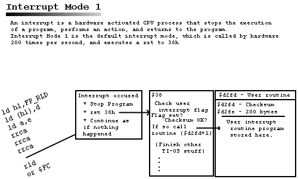

Written by Matt Johnson of 86 Central
Welcome to the interrupt section! This section is very comprehensive, and I am proud of its unique and detailed information. This covers some of the ROM interrupt code and explains Interrupt Mode 1 and Interrupt Mode 2 programming applications and theory. For even more advanced interrupt information, including "The reset, Calc-On, Calc-Off operations", "Fixing the Down-Left Bug", "Speedy IM 1", "Speedy IM 2", "TSR techniques", please proceed here. Enjoy!
On the Z80 processor, an interrupt is an action (triggered by hardware) that will suspend CPU operation and force the CPU to perform another function, or execute another routine. Right before the Interrupt Routine is called, it will push the PC (Program or Instruction Counter) on to the stack so it can return to its point of origin when the interrupt returns. It then will disable the interrupts before the interrupt routine is called. Once the interrupt cycle is completed, the CPU returns to the operation from which it was interrupted. There are three modes of interrupt response, Mode 0, Mode 1, and Mode 2. Which response mode is set is chosen with the asm instructions IM 0, IM 1, and IM 2, respectively.
I Register is the MSB (Most Significant Byte)
and the data bus is the LSB
(Least Significant Byte). The LSB is a random number that you don't know
(who knows what would be on the data bus?). That means that you must make
a table of 256 bytes beginning at $xx00 to $xxff.
In the table you store a lot of $8f for example, and then
a 16-bit address will be retrieved at
an even location at this vector table which results in a jump to $8f8f.
This is where you store the interrupt handler which should end with a jp
$38. (You only need this if you need the TI-OS to continue it's normal
interrupt cycle - thus it is not usually needed in assembly programs but
a must for TSR's).

During Mode 1, an interrupt is executed 200 times per second, and a
jump to $0038 is accomplished. So what does the calculator do 200 times
per second after it jumps to $0038? A whole bunch of stuff. I was looking
through the rom today for some 2-3 hours, and I must admit there is a lot
of crap that goes on!
Once $0038 is called, it first checks the user interrupt flag to see if
the user routine is installed (more on this later). It then checks the
checksum to see if the memory area is valid. Here is the code:
;RST 38 - interrupt (called ~200 times/sec.) 0038 08 ex af,af' ;save registers 0039 d9 exx 003a fdcb2356 bit 2,(iy+$23) ;call user int routine, if installed. 003e 2826 jr z,$0066 ;User interrupt installed flag set? If not, skip to $66 0040 3afdd2 ld a,($d2fd) ;Load checksum byte ;Checks to see if the checksum on the user routine 0043 21fed2 ld hl,$d2fe 0046 96 sub (hl) 0047 2125d3 ld hl,$d325 004a 96 sub (hl) 004b 214dd3 ld hl,$d34d 004e 96 sub (hl) 004f 2175d3 ld hl,$d375 0052 96 sub (hl) 0053 219dd3 ld hl,$d39d 0056 96 sub (hl) 0057 21c5d3 ld hl,$d3c5 005a 96 sub (hl) 005b 2005 jr nz,$0062 005d cdfed2 call $d2fe ; Checksum is OK, call user routine 0060 1804 jr $0066 ; Go to next part of interrupt 0062 fdcb2396 res 2,(iy+$23) ; Checksum doesn't add up, so it disables usr routine
The next part appears to branch off into three choices. If bit 0
is set on Port 3, it appears some sort of "ON" action has occurred, such as the
on key has been pressed. It will then branch off to another routine that
may turn the calc on. If bit 1 is set and bit 0 is clear, it appears that
the LCD is on and the on interrupt hasn't occurred. This is what happens
when the calculator is up and running. Next, if neither is set, it appears
that the LCD is off and the on key is not pressed. Thus the interrupt simply
finishes up at $0086. Here is the code:
0066 db03 in a,($03) 0068 1f rra ;On interrupt has happened ; - goto 008f(calc on,reset?) 0069 3824 jr c,$008f 006b 1f rra 006c 3828 jr c,$0096 ;if LCD is on and On interrupt ; hasn't occurred, goto 0096 006e 1816 jr $0086 ;if neither set, end interrupt
$96 is of particular interest. This is what usually is going on normally
200hz.. take a look:
0096 fdcb1e76 bit 6,(iy+$1e) 009a 2800 jr z,$009c ; Looks redundant to me 009c fdcb1246 bit indicRun,(iy+indicflags) 00a0 c42a01 call nz,anim_runindic ; Animates run indicator ; if flag set 00a3 fdcb1256 bit indicOnly,(iy+indicflags) 00a7 2017 jr nz,$00c0 ;If indicOnly flag set, ; then interrupt skips: reading ; keyboard, updating APD, ; and animating cursor. 00a9 cda101 call $01a1 ;read keyboard (returns keyb mask=$ff) 00ac fdcb1e76 bit 6,(iy+$1e) ;if flag set, set keyb port to $7f 00b0 2804 jr z,$00b6 00b2 3e7f ld a,$7f 00b4 d301 out (keyboard),a 00b6 fdcb0c56 bit curAble,(iy+curflags) ;if cursor enabled, animate it 00ba c48d3f call nz,_anim_cursor 00bd cd7001 call timeout ; Update APD - Auto Power Down routines 00c0 3e09 ld a,$09 ; $09 $0B signals on not pressed, $0A $0B signals on is pressed 00c2 c37000 jp $0070 ; Finish routine
As you can see, this code explains a lot. You can disable much of the ability
of the interrupts with flags. You can disable the run indicator with the
indicRun flag and can disable the built-in keyboard handler with
indicOnly flag.
Note this disables get_key style method
for getting keys, you must program
the ports instead. However this is one method for fixing the famous "Down-Left"
bug. More on this later. Explanations:
$0070, where the earlier code jumps here
at $c2. Here is the code:
0070 fdcb1e76 bit 6,(iy+$1e) 0074 280e jr z,$0084 0076 47 ld b,a ; First byte received from another routine 0077 db01 in a,(keyboard) 0079 4f ld c,a 007a 3eff ld a,$ff 007c d301 out (keyboard),a 007e cb41 bit 0,c 0080 ca5c0c jp z,$0c5c ;sets RAMport to 0, shuts calc off (no ret) 0083 78 ld a,b 0084 d303 out ($03),a ; First byte received from another routine ; Ends routine 0086 3e0b ld a,$0b 0088 d303 out ($03),a ; $09 $0B signals on not pressed, $0A $0B signals on is pressed 008a 08 ex af,af' ; Restore lost registers with shadow registers 008b d9 exx 008c fb ei ; Enable interrupts 008d ed4d reti ; Return from interrupts
At $70 it appears to read the keyboard for some reason, I am not certain
what the ROM is trying to do here, if anyone can clarify this for me please
e-mail me at matt@acz.org
and explain this mystery code. But anyway at $86 it finishes up. This should
help clarify some of the things that go on during the TI-0S is IM 1.
There is much more to disassemble in the ROM and a lot to learn if you are interested. Note this is Rom Version 1.2, and you can get this particular commented Rom Version (thanks to Joshua Grams) from Rom Central. You must go through my "security check" to download the rom listing, and you must have a 1.2 ROM on your calculator (check your rom version).
Most of us may think this was a little more detail then they wanted to know, but it is my web page, and I think that the theory behind things is very important. If you want to learn things on the surface, go to another web page. If you are not satisfied with two word answers and cryptic responses, you came to the right place. The next subject will explain more practical interrupt programming. This involves the user interrupt routine.
"So big deal", you think, "The interrupt calls memory location $38 two
hundred times per second. How does that help me?". Well, other then the
fact that you now have a better understanding of what is going on behind
the scenes, the topic of user interrupt routines come up.
The user interrupt routine is a 200 byte location in memory that, if a certain flag is set, will be called 200 times per second. In other words, you can have an asm program be called every interrupt! Since an interrupt runs in the background and affects nothing else, what we have here is TSR (Terminate and Stay Resident) program. If the user interrupt flag is set, the interrupt will jump to the 200 byte memory location and start executing asm code. Once it is finished, it will return to the interrupt and execute the rest of the interrupt. The program can do anything it wants, monitor keypresses, make your own custom screen saver, whatever!
Thanks goes to Jim Alverson, Dux Gregis, and Joshua Grams for their source code and explanations that help me piece together the concepts of interrupts and user routines.
$003a, a few instructions after $38,
you see the first thing it does is check the flag with the instruction bit 2,(iy+$23).
If this flag is clear, it will skip the user interrupt code. If the flag
is set, however, the code continues...
$d2fd, which is a 1-byte checksum
byte. Then it takes the checksum byte and subtracts the 1st, 40th, 80th,
120th, 160th, and 200th bytes of the routine. If, while in the process
of subtracting 8-bit values from the 8-bit checksum, the subtraction causes
the number to go below 0 it just wraps back to 255 (Example: 128 - 129
= 255) If the checksum is not equal to zero, then it is a bad checksum and
the user interrupt will be disabled (it changes the flag)
$d2fe, which is one byte after
the checksum. It will now execute asm code until a ret statement is found,
from which it will then return to the interrupt.
Part of the source code will be used to install the code. Another part will be the code itself that will go in the user routine. This is clearer when you see the template and sample program (later on). Here are the steps needed to install your own user routine.
$d2fe). This is accomplished with the
ldir instruction.
$d2fd), and activate
the user interrupt routine by setting the user interrupt flag. The
interrupt routine is now installed, and as long as that is flag is set,
it is there for good. It will run in the background along with the rest
of the interrupt and know one will know (unless some visual clue is given).
Any program that runs in the background is basically a TSR. Now if you have a disgruntle TSR, it can be considered a virus. So it is possible to make a virus on a calculator, although it is highly unlikely it will spread for many reasons but I won't discuss them here.
This template is the basic setup needed for installing a user routine. It is commented below.
#include "asm86.h"
#include "ram86.inc"
#include "ti86asm.inc"
_user_int_ram EQU $d2fd ;Area where interrupt handler goes
.org _asm_exec_ram ;Instruction Counter starts at $D748
res 2,(iy+$23) ;turn user int off so it won't get called by
;accident before we're ready
ld hl,int_copy ;copy prog to user int buffer
ld de,_user_int_ram+1 ;1 byte ahead of checksum
ld bc,int_end-int_start ;length of interrupt handler
ldir ;hl is the source, de is the destination,
;and bc is the length
ld a,(_user_int_ram+1) ;set up checksum byte
ld hl,_user_int_ram+($28*1) ;load byte
add a,(hl) ;add to total
ld hl,_user_int_ram+($28*2) ;load byte
add a,(hl) ;add to total
ld hl,_user_int_ram+($28*3) ;load byte
add a,(hl) ;add to total
ld hl,_user_int_ram+($28*4) ;load byte
add a,(hl) ;add to total
ld hl,_user_int_ram+($28*5) ;load byte
add a,(hl) ;add to total
ld (_user_int_ram),a ;load checksum in its location
set 2,(iy+$23) ;turn it on
ret
int_copy:
.org $D2FE ; Intruction Counter starts at $D2FE
int_start:
; ----------------------------------
; Code goes here, follwed by a 'ret'
; ----------------------------------
int_end:
.end
As you can see, this template follows the steps I described above this routine. It defines the start of the user interrupt, disables the flag, copies the asm code starting at the int: label, calculates the checksum, and sets the flag.
There are two .org addresses in the program.
The first .org sets the
instruction counter to _asm_exec_ram, which is $d748 (the start of all
asm programs). The second .org instruction sets the instruction counter
for the start of the interrupt code ($d2fd). Notice that the .org is needed
by the assembler for calculating fixed 16-bit addresses such as labels,
variables, and jp instructions.
Notice that all the bytes you add up result in the checksum. The ROM
subracts all these bytes that your previously added up from the checksum.
If the data is valid then the result is zero and the user routine is called.
Any overflow when adding the bytes just "wraps around" For example, 255
+ 1 wraps back to 0.
This program constantly draws a small sprite that displays TI86 on the upper left corner of the screen. This is a 8 x 9 character sprite. Here is the code:
; Matthew Johnson
; matt@acz.org
; http://www.dogtech.com/cybop/ti86/
; Interrupt Sprite Example
#include "ram86.inc"
#include "ti86asm.inc"
_user_int_ram EQU $d2fd ;Area where interrupt handler goes
.org _asm_exec_ram ;Instruction Counter starts at $D748
res 2,(iy+$23) ;turn user int off so it won't get called by
;accident before we're ready
ld hl,int_copy ;copy prog to user int buffer
ld de,_user_int_ram+1 ;1 byte ahead of checksum
ld bc,int_end-int_start ;length of interrupt handler
ldir ;hl is the source, de is the destination,
;and bc is the length
ld a,(_user_int_ram+1) ;set up checksum byte
ld hl,_user_int_ram+($28*1) ;load byte
add a,(hl) ;add to total
ld hl,_user_int_ram+($28*2) ;load byte
add a,(hl) ;add to total
ld hl,_user_int_ram+($28*3) ;load byte
add a,(hl) ;add to total
ld hl,_user_int_ram+($28*4) ;load byte
add a,(hl) ;add to total
ld hl,_user_int_ram+($28*5) ;load byte
add a,(hl) ;add to total
ld (_user_int_ram),a ;load checksum in its location
set 2,(iy+$23) ;turn it on
ret
int_copy:
.org $D2FE ; Intruction Counter starts at $D2FE
int_start:
ld hl, $FC00 ; HL points to display
ld de, CalcPIC ; DE points to start of sprite
ld b, 9 ; Nine rows
Loop:
ld a, (de) ; Get byte from sprite
ld (hl), a ; Display byte on screen
inc de ; Next byte of sprite
ld a, l
add a, 16 ; Add 16 to L (goes to next row)
ld l, a
djnz Loop
Finished:
ret ; returns
CalcPIC:
.db %11101110
.db %01000100
.db %01001110
.db %00000000
.db %11100100
.db %10101000
.db %01001100
.db %10101010
.db %11100100
int_end:
.end
CalcPIC is the Label assigned to the start of the sprite, which will be
stored in the user routine along with the rest of the code.
Notice that this sprite is fixed in memory. The first byte is drawn
at Once the program is run, it is there for good until you reset your calculator's
memory. Enjoy!
$fc00, the next byte is drawn at $fc10, the next byte at
$fc20, etc, etc. Once the first byte is drawn, we simply inc de
and inc de points to the
next byte of the sprite. We then add 16 (16 bytes * 8 pixels/byte = 128
width of screen) to HL to go to the next row in the display. Since HL starts
at $fc00 and we add 16 to l nine times for each new row,
hl will only equal
h register
and no carry will produce so we don't have to worry about it.